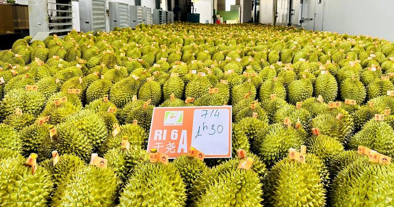

⚡Trung Quốc, Mỹ... phê duyệt mã số vùng trồng nông sản, sầu riêng trước khi nhập khẩu
Thứ trưởng Nguyễn Hoàng Hiệp chủ trì hội nghị - Ảnh: C.TUỆ Ông Huỳnh Tấn Đạt, Cục trưởng Cục Trồng trọt và Bảo vệ thực vật, cho biết như vậy tại hội nghị triển khai Nghị quyết 36 của Chính phủ về đơn giản hóa thủ tục hàn